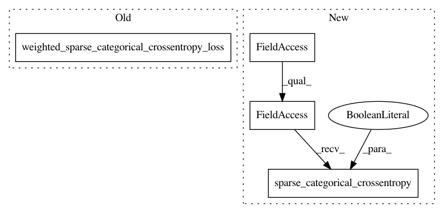

1357ce1904eb522f7fbfa46f7edcf091162287b7,official/nlp/bert/bert_models.py,BertPretrainLossAndMetricLayer,call,#BertPretrainLossAndMetricLayer#Any#Any#Any#Any#Any#,69
Before Change
if sentence_labels is not None:
sentence_output = tf.cast(sentence_output, tf.float32)
sentence_loss = losses.weighted_sparse_categorical_crossentropy_loss(
labels=sentence_labels, predictions=sentence_output)
loss = mask_label_loss + sentence_loss
else:
sentence_loss = None
loss = mask_label_loss
After Change
if sentence_labels is not None:
sentence_output_logits = tf.cast(sentence_output_logits, tf.float32)
sentence_loss = tf.keras.losses.sparse_categorical_crossentropy(
sentence_labels, sentence_output_logits, from_logits=True)
sentence_loss = tf.reduce_mean(sentence_loss)
loss = mask_label_loss + sentence_loss
else:
sentence_loss = None
In pattern: SUPERPATTERN
Frequency: 3
Non-data size: 4
Instances
Project Name: tensorflow/models
Commit Name: 1357ce1904eb522f7fbfa46f7edcf091162287b7
Time: 2020-06-22
Author: jeremiah@google.com
File Name: official/nlp/bert/bert_models.py
Class Name: BertPretrainLossAndMetricLayer
Method Name: call
Project Name: tensorflow/models
Commit Name: 1e4fd825bcf4b42933e206bffe2ced288faa9e5e
Time: 2020-06-25
Author: hongkuny@google.com
File Name: official/nlp/tasks/masked_lm.py
Class Name: MaskedLMTask
Method Name: build_losses
Project Name: tensorflow/models
Commit Name: 9d9aa387fefb8b2ed44d0af217e68120eeab7427
Time: 2020-06-25
Author: hongkuny@google.com
File Name: official/nlp/tasks/masked_lm.py
Class Name: MaskedLMTask
Method Name: build_losses